The Solex Mal
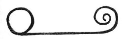
This is the symbol of the Solex-Mal, the Solar or Mother Tongue, the universal language of all mankind. This language
was the original tongue once spoken on Earth by all people and is still used by the inhabitants of other worlds in
outer space. It is a symbolic, pictographic language.
Solex means Solar, and Mal means Tongue. In Spanish, the word Mal means bad, sin, evil, hurt, injury, illness. In the
drawing heading this chapter, we see the Solar Disc or Circle on the left. Extending out from this disc, to the right,
is a curved or curled tongue. Therefore, it is literally a tongue as well as a language referring to a tongue.
How did the word Mal meaning tongue come to signify evil and other negative conditions? James 3:5-8 says: "Even so
the tongue is a little member, and boasteth great things. Behold, how great a matter a little fire kindleth!
And the tongue is a fire, a world of iniquity: so is the tongue among our members, that it defileth the whole body,
and setteth on fire the course of nature; and it is set on fire of hell. For every kind of beasts, and of birds, and
of serpents, and of things in the sea, is tamed, and hath been tamed of mankind: But the tongue can no man tame; it is
an unruly evil, full of deadly poison.
Job 5:21: "Thou shalt be hid from the scourge of the tongue: neither shalt thou be afraid of destruction when it
cometh."
I Peter 3:10: "For he that will love life, and see good days, let him refrain his tongue from evil, and his lips that
they speak no guile."
Proverbs 10:20: "The tongue of the just is as choice silver: the heart of the wicked is little worth."
Proverbs 12:18: "There is that speaketh like the piercings of a sword: but the tongue of the wise is health."
Proverbs 12:19: "The lip of truth shall be established for ever: but a lying tongue is but for a moment."
Proverbs 15:4: "A wholesome tongue is a tree of life: but perverseness therein is a breach in the spirit."
Proverbs 18:21: "Death and life are in the power of the tongue: and they that love it shall eat the fruit
thereof."
Proverbs 21:23: "Whoso keepeth his mouth and his tongue keepeth his soul from troubles."
Jeremiah 9:5: "And they will deceive every one his neighbor, and will not speak the truth: they have taught their
tongue to speak lies, and weary themselves to commit iniquity."
Jeremiah 3:18: "My little children, let us not love in word, neither in tongue; but in deed and in truth."
Again in James, 1:26: "If any man among you seem to be religious, and bridleth not his tongue, but deceiveth his own
heart, this man's religion is vain."
In a Psalm of David, Psalm 39:1, we find: "I said, I will take heed to my ways, that I sin not with my tongue: I will
keep my mouth with a bridle, while the wicked is before me."
There are many other references to the tongue of man in the Bible, but those referred to will be sufficient to show
how the word for tongue in the original Mother Language came to be used in later languages and meant bad or evil.
St. Matthew 15:11: "Not that which goeth into the mouth defileth a man; but that which cometh out of the mouth, this
defileth a man."
And in St. Matthew 15:17-20, Jesus said: "Do not ye yet understand, that whatsoever
entereth in at the mouth goeth
into the belly, and is cast out into the draught? But those things which proceed out of the mouth come forth from the
heart; and they defile the man. For out of the heart proceed evil thoughts, murders, adulteries, fornications, thefts,
false witness, blasphemies: These are the things which defile a man: but to eat with unwashen hands defileth not a
man."
Therefore, evil comes from the heart of man and the tongue is the conveyor of that evil to other men. We must not
translate Solex-Mal to mean Solar Bad or Solar Evil. For originally there wasn't any evil in our Solar System.
Therefore, Solex-Mal means, simply, Solar Tongue. The word Mal has come down to us from the dim past and is still used
in certain languages of our Earth.
The inhabitants of the Earth at one time spoke and used the Solar Tongue. All anthropologists and linguists agree
that at one time there was only one language, and that from that one language all those existing today came into
being. The countless languages of Earth are likened unto a tree with many branches. As we go from the top of the tree
we see the branches thinning out; suddenly there are only two or three large branches; then we arrive at the single
trunk. Science knows what languages are represented by the two or three large branches, but they have never yet
discovered the original, parent language of Earth. All languages of today are related to it.
Our Holy Bible wholly agrees with this theory, and tells us how many languages came out of one. In Genesis 11:1-9, we
read: "And the whole earth was of one language, and of one speech. And it came to pass, as they journeyed from the
east, that they found a plain in the land of Shinar; and they dwelt there. And they said one to another, Go to, let us
make brick, and burn them thoroughly. And they had brick for stone, and slime had they for mortar. And they said, Go
to, let us build us a city and a tower, whose top may reach unto heaven; and let us make us a name, lest we be
scattered abroad upon the face of the whole earth. And the Lord came down to see the city and the tower, which the
children of men builded. And the Lord said, Behold, the people is one, and they have all one language; and this they
begin to do: and now nothing will be restrained from them, which they have imagined to do. Go to, let us go down, and
there confound their language, that they may not understand one another's speech. So the Lord scattered them abroad
from thence upon the face of all the earth: and they left off to build the city. Therefore is the name of it called
Babel; because the Lord did there confound the language of all the earth: and from thence did the Lord scatter them
abroad upon the face of all the earth."
The Tower of Babel was built by Nimrod and intended to reach to heaven. Nimrod, king of Babylon, wished for greater
power and decided to war on God. His tower of bricks in Shinar was built by six-hundred-thousand men and was so tall
that it took a year to reach the top. From it some men shot arrows at the sky, and they came back bloodied. When the
tower was not quite finished, God sent seventy angels to confuse the tongues of the workmen. One did not understand
the next; they fought, some were transformed into apes and demons, and the survivors were scattered as the seventy
nations on the face of the earth. One third of the tower sank into the earth, one third was burned, one third
remained. Whoever passes the place where the tower stood loses his memory completely. Tradition names the tower of
Birs-Nimrud at Borsippa as the original. The story may have been inspired in the nomadic people by the ziggurats and
the swarming cosmopolitan life of the large Babylonian cities. Somewhat similar legends accounting for the diversity
of languages are found in Africa, eastern Asia, and Mexico.
Ancient manuscripts tell us that at one time man on Earth lived in a Golden Age and "spoke with angels." This simply
means that in Atlantis and Lemuria and before, Earth people were in constant contact with beings from outer space or
"angels." Through evil and greed and lust, the Golden Age passed from the Earth and with it went the ability to speak
the Solex-Mal. We will again speak this "language of angels," in the New Age now dawning.
Already we can see the evidence mounting that man needs a common, universal language. The new language of science is
"Interlingua". A grammar and a dictionary of Interlingua has been published. This publication climaxed twenty-five
years of work by expert linguists who developed the new language. It comes from some of the languages of the western
world and in its written form more closely resembles Spanish than any other, although it also has French, Italian and
English words. It has a twenty-seven thousand word vocabulary, including seventeen thousand scientific and technical
terms which already have wide international usage. The grammar is simpler than that of any of the national languages
and can be learned in a short time.
The following is written in Interlingua: "Energia es necessari pro toto que occure in le mundo. In temporas passate
le plus grande parge del energia applicate esseva fornite per le fortia muscular del homies e del animales domestic."
The English translation of the above is: "Energy is necessary for all that occurs in the world. In past times the
greatest part of the applied energy was furnished by the muscular strength of men and domestic animals."
Interlingua is now a scientific language, but it could become a means of international communication in other fields.
For the greatest possible progress in science it is essential that research workers know the results of work along
similar lines by investigators in other countries. There should be a continual exchange of ideas and results. Wouldn't
it be wonderful if any person could travel through the world and converse understandably with any literate person in
any nation?
The new world interlanguage is Esperanto. It is steadily growing in practical use in every civilized land. The
pronunciation is simple, there are no irregular verbs, and there are no exceptions to the few grammatical rules. It is
so constructed that a vocabulary is quickly acquired. Esperanto short-wave broadcasts average one-hundred fifty-five a
month and it is taught in five-hundred and fifty schools and colleges, some in the United States. It is being
increasingly used by business, and particularly by travel organizations to solve language barriers.
The following is written in Esperanto, see how easy it really is: "Inteligenta persono lernas la interlingvon
Esperanto rapide kaj facile. Esperonto estas la moderna, kultura lingvo por la internacia monda. Simpla, fleksebla,
praktika solvo de la problemo de generala interkompreno, Esperanto meritas seriozan konsideron."
Bill Cunningham, in "The Boston Herald," said: "There can never really be one world until there's one language . . .
one working language that the people running that world can speak, write and understand . . ."
Undoubtedly we need some sort of international language to surmount the barriers that diverse languages have created
ever since the building of the Tower of Babel. The difficulty lies in getting people to learn a tongue different from
their own. Why learn an artificial language, say the English-speaking nations, when English is so eminently suitable?
On the other hand, the French and the Germans and the Italians stubbornly insist that French or German or Italian is
the best means of communication. However illogical such a position might appear, one really can't blame them. So we
need an international language.
The meetings of the United Nations Security Council bear out this need. Everything the Russian delegate says has to
be translated into English and French. Not only is this a waste of precious time, but it is also a burden on those who
understand Russian and French as well as English. They have to listen to the delegate's words three times running. If
the delegate could speak in some international language, much time would be saved and his speeches would have to be
heard only once.
Many of the old ways will be eliminated in the New Age. Even now we can see the trend. We are now in a transitional
stage to the Golden Dawn just ahead of us. We will again "speak with angels," for we will understand and speak the
Solex-Mal, the original, and Universal Mother Tongue of Creation.
The inhabitants of other worlds call our Earth Saras or Saros. Saros is a Babylonian numeral representing sixty
sixties or three-thousand six hundred. It is also the Chaldean cycle of years, and in ancient Chaldean it meant
"repetition", or "repetition of cataclysms". A fitting word for the Earth planet! Our world is also called Chan or
Shan. This word also describes our Earth very well, indeed! Our world has been termed the "sorrowful planet". Perhaps
the word sorrow came from saros; at least, it sounds like it could have.
Eventually, dictionaries will not even be used, for the Solex-Mal is a symbolic, pictographic language. When reading
it in written form, one interprets symbols instead of reading words. Therefore, a symbol will be understood by all
whether they have ever seen the particular symbol before or not.
The following symbolic writing was received by our research group in northern Arizona in 1952. It is believed to be
written in Solex-Mal. It has not been translated as yet. Some of it is Atlantean in character and the signatures of
prominent personages are in evidence. It is evidently a complete message in itself.
 |
TAUMA |
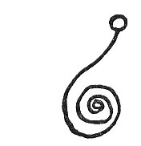 |
RAU |
|
MAMMAU |
|
RAMDA |
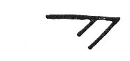 |
LENN-YAH |
|
MU-NATAI |
|
KAAR-MU-DUM |
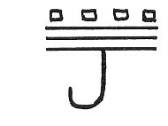 |
MEXEL-TAUX-MANILIL |
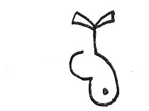 |
MASU-RA |
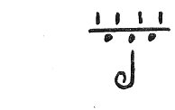 |
MEXEL-MANU-VEC |
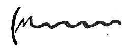 |
RAGDA-MUNLIL |
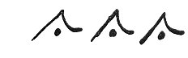 |
JOSH-TAU-MAXIM |
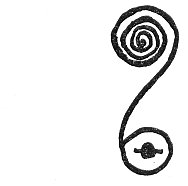 |
MESMAI |
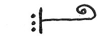 |
LENNA (Protruding tongue symbols). |
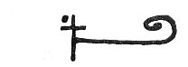 |
LENISH |
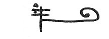 |
LENMAL |
 |
LENVA |
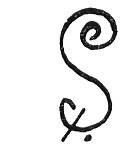 |
SHOSH (Snake-form symbols). |
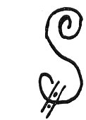 |
SHAP |
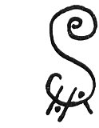 |
SHOP'H |
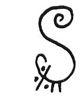 |
SHEN'LIL |
 |
FAMMA (Arms-forward symbols). |
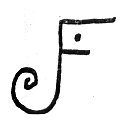 |
FAMMIL |
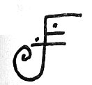 |
FAMMNAL |
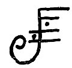 |
FAMMOSH |
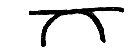 |
ASAP'H (Civilization on world sphere). |
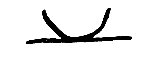 |
ASAP'H-UN (Civilization under world sphere). |
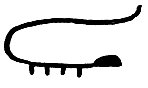 |
SART-MUNDAI |
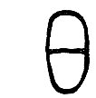 |
EDEN-MAI (This could be the symbol for the division in the Garden of Eden). |
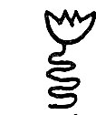 |
XEN'PH-MAU |
 |
MAX-MAL-KISH-ROK TAU-MUN |
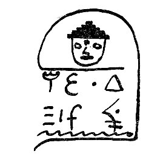 |
(Signature of a person). |
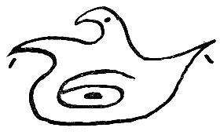 |
AGASSI-PAN-AGASSI-MALDEC-TOM-MU (There is reference here to the planet Maldek (c) and to the Motherland of
Lemuria. (Mu). |
|
EXTEL-HAI |
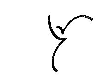 |
UR |
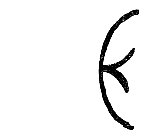 |
EIL |
|
MUS |
|
NA'SHI |
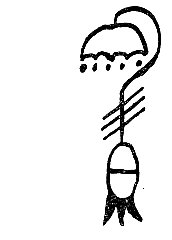 |
SHUK-TUM-MU (Lemuria, Mu, mentioned again). |
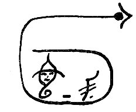 |
(Signature of a person). |
|
RAGIF-KONT-VA |
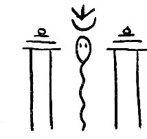 |
MEGAL-MEX-MAL |
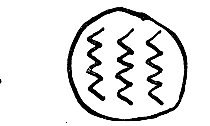 |
UDAI-HUN-DALAI |
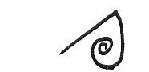 |
ENLIL |
 |
KAL-MU-KAL |
|
ISO-TOK-MAL |
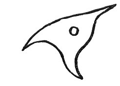 |
LESH-TAL |
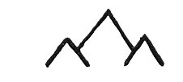 |
PITASH-ROK (Evidently identical with Pitach-Rhok, mountains of Poseid or Atlantis. |
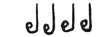 |
IMELEX |
|
UR-MUN ZELPH |
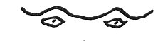 |
SHAM-TOK-MARU (The eight-pointed star is the "Star of Baptism" or "Regeneration.") |
|
MEP'TH-MAU |
|
MEP |
|
MEP'TH |
|
NAAG |
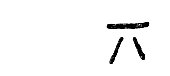 |
TESH |
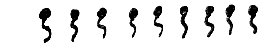 |
ELHIM-NAZ |
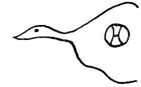 |
RAGGA-DAHL |
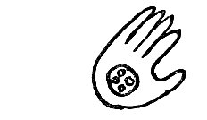 |
REG-MAHL (The Four Great Primary Forces contained within the Universe, which, in turn, is within the hand of
God). |
|
VIZ |
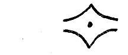 |
MARN |
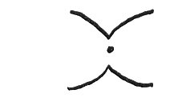 |
MARF |
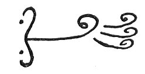 |
MAR-TOK-MARU |
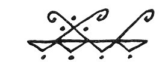 |
MAR-TOK-KAL |
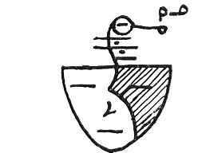 |
MAR-TOK (The "shadowed" left eye shows that this individual does not have spiritual perception). |
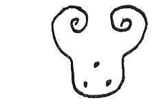 |
TEC-LACMAL |
|
RAP'H |
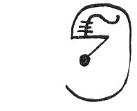 |
ERMON |
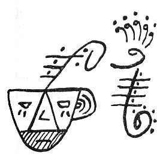 |
PHAMMON (A highly developed individual displaying many accomplishments. The "shadowed" mouth shows that his
tongue speaks no evil). |
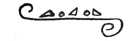 |
PHLIL |
|
PHLAN |
|
URNA ("U" or Urn-shaped symbols). |
|
URNAS |
|
URNAN |
|
URNEP'H |
 |
SHEO-SHEOI (To the apples we salt we return). |
|
AKASH (Memory of other lives. Similar to Akasa in the Sanskrit, one of the five elements of the Sankhya
philosophy, identified as space, ether, or sky. Devotees who gaze upward until stiffening muscles prevent change
of facial position are termed Akas-Mukhi, or "sky-facers"). |
|
PLAMMA (Past lives remembered by memory stirred through dreams). |
|
PLAMMA (New experiences discovered in dreams. "Plamma" means forces active at night). |
|
ARAMMA (Force or forces aiding progression upward; the road to ever-expanding grandeur). |
Much of the foregoing symbolism is similar to the ancient scroll writing of the Atlanteans. Every written thought in
Atlantis was a challenge to the reader's mental development and a great variety of translations could be given to the
same scrolled copy. The scroll form was used because it is symbolic of evolution, it is ever expanding.
Atlantis, however, used a modified form of the original Solex-Mal. So we would expect to find great similarities if
not exact duplications in some cases.
Actually, there is nothing new under the sun; the New Age will not really be "new" at all--we are only returning to
that status which we lost millennia ago.
In St. James 3:10, we find: "Out of the same mouth proceedeth blessing and cursing. My brethren, these things ought
not so to be."
Poisonous insects were often used in ancient times to symbolize the deadly power of the human tongue--and it was an
accurate portrayal. But in the near future blessing and cursing will not proceed out of the same mouth; the mouth that
insists on cursing will be sealed up, but the mouth which blesses will be the mouth that tastes of the fruit of things
promised.
Aphorismic statement was one of the favorite methods of instruction used in the Pythagorean university of Crotona.
One aphorism says: "Govern your tongue before all other things, following the gods."
Just as science and religion will be one, so will all language be one language: the evil tongue will be
silent and the wise tongue will rejoice; we shall "follow the gods", for this is the promise of OTHER TONGUES!